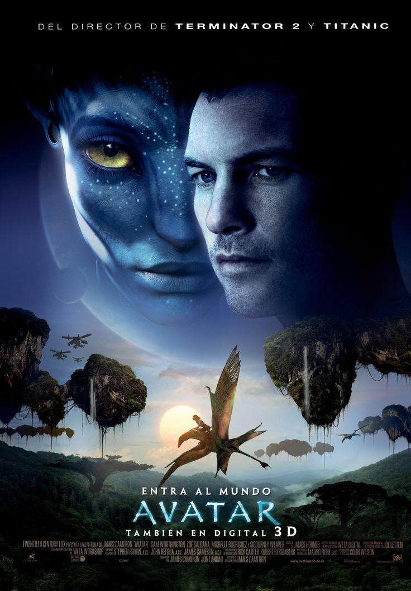

Tanjiro Kamado y sus compañeros se embarcan en el Tren Infinito para investigar una serie de desapariciones misteriosas. Cada vagón esconde peligros mortales y secretos que pondrán a prueba su valentía, habilidades de combate y trabajo en equipo. A lo largo del viaje, se enfrentan a demonios extremadamente poderosos, desarrollan estrategias para proteger a los pasajeros y descubren verdades ocultas sobre los demonios que acechan el tren.
La animación es impresionante, con escenas de acción llenas de dinamismo y efectos visuales que capturan cada detalle. La historia combina emoción, tensión y momentos conmovedores, ofreciendo una experiencia épica para los fans del anime y para quienes buscan aventuras emocionantes y visualmente impactantes. Una película que destaca por su narrativa envolvente, sus personajes entrañables y secuencias de combate que dejan al espectador sin aliento.
Sam Flynn, hijo del brillante programador Kevin Flynn, se adentra en el mundo digital conocido como el Grid, un universo virtual creado por su padre años atrás. Allí descubre que su padre ha estado atrapado durante años y que el sistema está bajo el control del implacable programa Clu, que busca dominar y perfeccionar el Grid a toda costa. Sam debe enfrentarse a peligros inimaginables, desde programas hostiles hasta trampas mortales, mientras intenta rescatar a su padre y restaurar el equilibrio en el mundo digital.
A lo largo de su viaje, Sam cuenta con la ayuda de Quorra, una aliada inesperada, y juntos navegan por paisajes impresionantes llenos de luz y tecnología, participando en persecuciones, combates y desafíos que ponen a prueba su ingenio y valentía. La animación y los efectos visuales son impresionantes, con secuencias de acción y carreras de motos de luz que envuelven al espectador en un mundo futurista lleno de adrenalina y emoción.
Dom Cobb es un extractor especializado en robar secretos del subconsciente durante los sueños. Tras perder todo lo que ama, se le presenta una oportunidad única: implantar una idea en la mente de alguien, una misión conocida como "inception", que nunca antes había intentado.
Cobb y su equipo deben atravesar múltiples niveles de sueños, donde la realidad y la imaginación se mezclan, enfrentando desafíos que distorsionan el tiempo y ponen a prueba su ingenio y valentía. La película combina acción, suspenso psicológico y efectos visuales innovadores, ofreciendo una experiencia intensa y absorbente que deja al espectador cuestionando la naturaleza de la realidad.
A medida que avanza la misión, Cobb también debe enfrentarse a sus propios recuerdos y culpas, que amenazan con desestabilizar los sueños y poner en riesgo a todo su equipo. Cada decisión se vuelve crucial, y la tensión aumenta con cada nivel, mientras la línea entre lo real y lo soñado se vuelve cada vez más difusa. La narrativa ingeniosa y los personajes complejos hacen que Inception sea una película que combina emoción, intriga y reflexión, dejando al espectador pensando mucho después de que termina.
